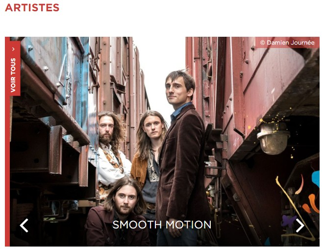
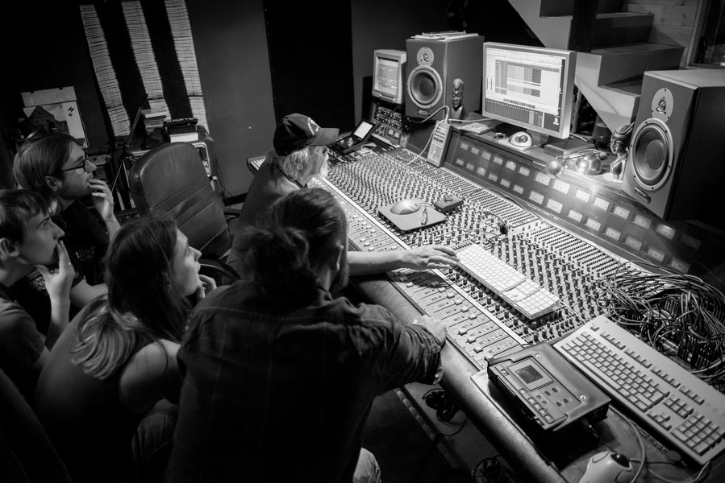

Nouvel album en préparation
10 Décembre, 2019

Après une fabuleuse tournée estivale 2019, on vous prépare que des bonnes choses. Déjà une tournée hivernale de l'espace, et surtout un nouveau cd qu'on vous fait mijoter tout doucement. Patience patience, et du nouveau très bientôt !
Live à l'UBU
14 Février, 2018
Can't Find Your Legs, le clip !
03 Février, 2018
Nouvel EP disponible
08 Décembre, 2017
Tournée des Trans 2017
16 Novembre, 2017
Critique de Fuzzy Stew dans Plouc Magazine
01 Novembre, 2017
Transmusicales 2017
19 Septembre, 2017

C'est officiel ! Nous jouerons pour les Transmusicales à Rennes cet hiver, le 8 Décembre. On vous attend, ça va être grand !
Smooth Motion en studio
8 Septembre, 2017

Nous venons d'achever une session de 3 jours de studio. Avec l'aide de notre producteur, M Robert Wood, et notre ingénieur du son, M Gérard Lhomme, 3 nouveaux morceaux sortiront bientôt !